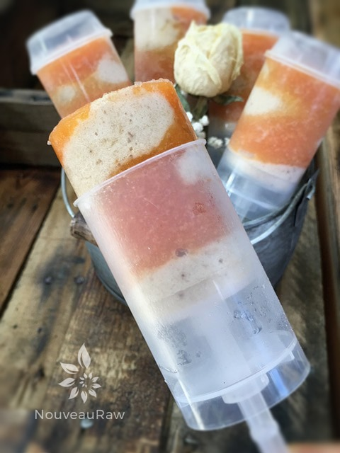

Banana Papaya Dixie Pops

~ raw, vegan, gluten-free ~
This is my first summer here in Tucson. Holy heatwave it’s hot here! As a person who eats a high raw diet, I am in luck so far because the temps haven’t exceeded 115 degrees, so my insides are still raw. Haha, This morning we went to the St. Phillips Farmer Market (which is amazing) but at 8:00 a.m. it was already in the high 90’s. Bless the vendor’s hearts for I do not understand how they can stand out there for 4 hours!
Within an hour my inner core was roasting, and all I could think of was about my Banana Papaya Pops back home in the freezer! Humans don’t belong in such temperatures. I have yet to figure out how to find a comfortable medium though. Outside I roast, inside I freeze due to the over-kill of air-conditioning. At least in all the years, I lived in Alaska I was cold outside and cold inside!
Anyway, I am a lover of papaya. My relationship with it though started off a bit rocky. My first introduction to it was back when I was 15 years old. I was given a taste of a very UNripe papaya, and it tasted like soap to me. Back then I didn’t really give much thought to the taste differences that can happen between a ripe or unripe fruit. About a year passed by and I thought I would give papaya another try. This time it came from the bulk bin at the store I worked in. It was dried in a bucket of sugar, or at least that is what it tasted like. Yuk.
So needless to say, I never gave papaya much more thought until a few years back. Once I learned to eat it ripe, I was introduced to a whole new world of flavor! I enjoy it just cut up, but I also love how it transforms my morning smoothies into something creamy. Let’s not forget to mention how darn good it is for you. Papaya is high in digestive enzymes, which aids in digestion.
If you are new to papayas and wonder what they taste like…(when ripe) the orange flesh is deliciously sweet with musky undertones and a soft, butter-like consistency. You don’t want to eat the peel. After cutting one open DON’T throw away the seeds!
Papaya seeds are used in many recipes and have several health benefits. They have a peppery taste and can be ground up and used as a substitute for black pepper. As an example, you can blend papaya seeds into a dressing for a peppery flavor. The seeds can also be eaten by themselves, sprinkled on salads, or added to smoothies.
- 4 cups cubed papaya = 3 cups blended
- 4 cups diced frozen bananas = 3 bananas
- 2 Tbsp maple syrup
- 1/4 cup raw almond milk
Preparation:
Papaya Layer:
- In the blender or food processor combine the papaya and sweetener. Blend until creamy.
- You may need more or less sweetener; it depends on how ripe your papaya is. So I encourage you to taste test as you go.
Banana Layer:
- In the blender combine the banana and nut milk, blending until it resembles soft-serve ice cream.
Assembly:
- Using 3 oz Dixie cups or other molds, alternate layers till you fill the cup to the top, tapping them slightly to work out any air pockets.
- Poke in your popsicle sticks and freeze. OR you can eat as is….soft serve!!
- I had some leftover papaya, so I made some pops that were just made from that. Oh, yummy.
Freezing Suggestions for Ice Cream:
- Freeze in popsicle molds or 3 oz Dixie cups with a popsicle stick inserted.
-
- Store the ice cream in the very back of the freezer, as far away from the door as possible. Every time you open your freezer door you let in warm air. Keeping ice cream way in the back and storing it beneath other frozen-sold items will help protect it from those steamy incursions.
- Wish to make your own raw ice cream, wonder what machine I might recommend, and more? Click (here) to check out the Reference Library!

© AmieSue.com